Emulators and PC stores (Steam, Epic, GOG, EA, Ubisoft, Xbox, Riot) together, with a controller. Every game has its page: a case you can spin, your play time, your achievements.

Consoles and PC together on a 3D shelf, in their real cases. iBox installs your emulators, tunes each game for your PC and lets you play together, even remotely.
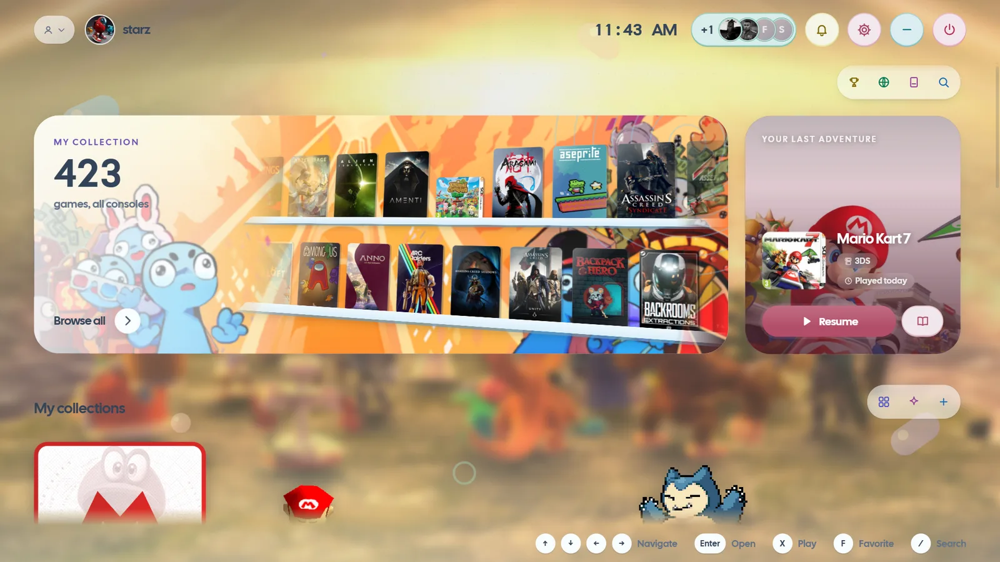
Add your folders: iBox finds your games, their covers and their manuals, then launches them with the right emulator and the right settings.
Emulators and PC stores (Steam, Epic, GOG, EA, Ubisoft, Xbox, Riot) together, with a controller. Every game has its page: a case you can spin, your play time, your achievements.
Pick a console: iBox Platforms downloads the recommended emulator from its official source, checks the file and installs it. iBox never provides games, BIOS files or keys.

Emulator settings tailored to your PC and to each game, with an exact preview before every change, a backup and one-click undo.

RetroAchievements and Steam in one room: your level, your next goals, and achievements announced while you play.

A fan of cases, one big picture or a mosaic, a colour, an icon: every collection gets its own style. Put it wherever you like and decorate the home screen with logos, characters and animated stickers.
Move the pointer over the screen for a closer look.
Every console has its own case, modelled for iBox. It opens, and the disc or the game card comes out. In the app, it wears your game's cover.
Drag the shelf or pick a console.
Wallpaper, palette, collections, stickers: the home screen is yours to compose. Here are twelve, on the same app. Pick a player: the page dresses in their colours.
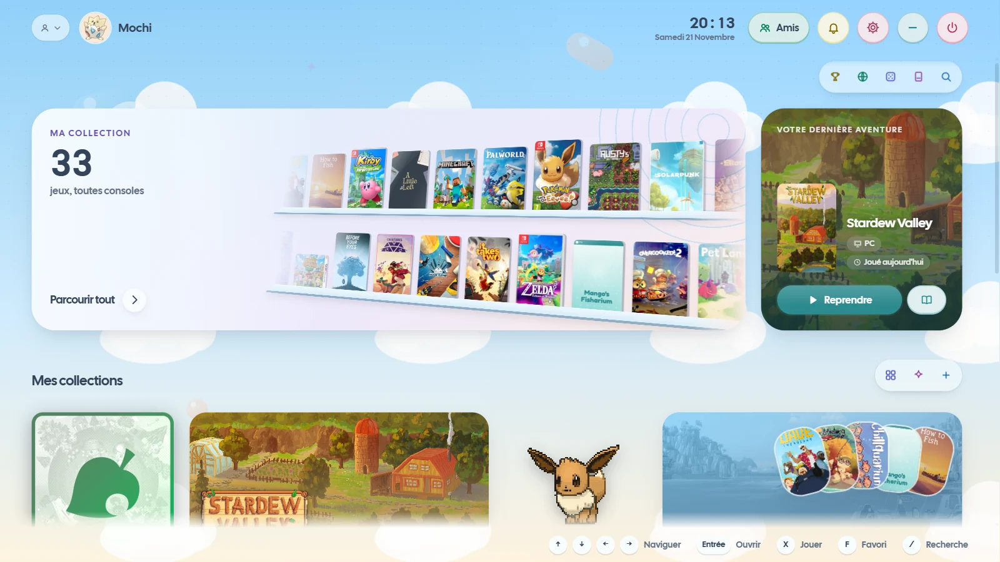
Cosy player: farms, quiet fishing and Sunday puzzles under a morning sky.

Diver and pirate: the deep, full sails and fishing trips, all the way to the stars.
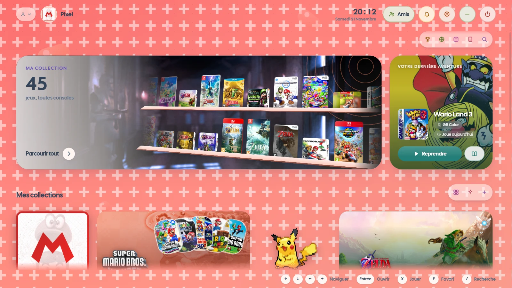
Cartridge nostalgia: Mario, Wario, Hyrule and handhelds, in animated sprites.
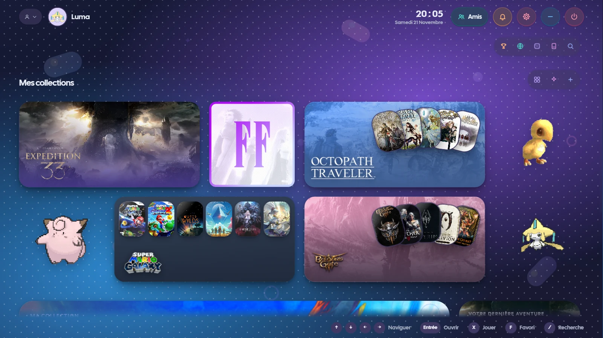
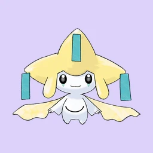
RPG dreamer: crystals, turn-based battles and starry skies on a galaxy backdrop.

Explorer of the great outdoors: Hyrule, forest survival, peaks to climb and monsters to hunt.
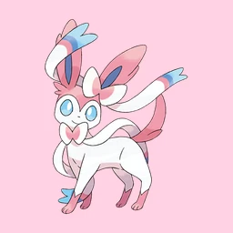
Candy-pink heart: soft mascots, card duels and shonen heroes.

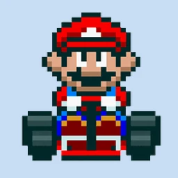
Born racer: karts, circuits, endless roads and Sunday sports.

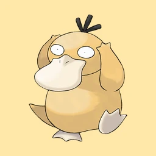
Queen of game nights: couch co-op, mini-games, friendly brawls and laughs.
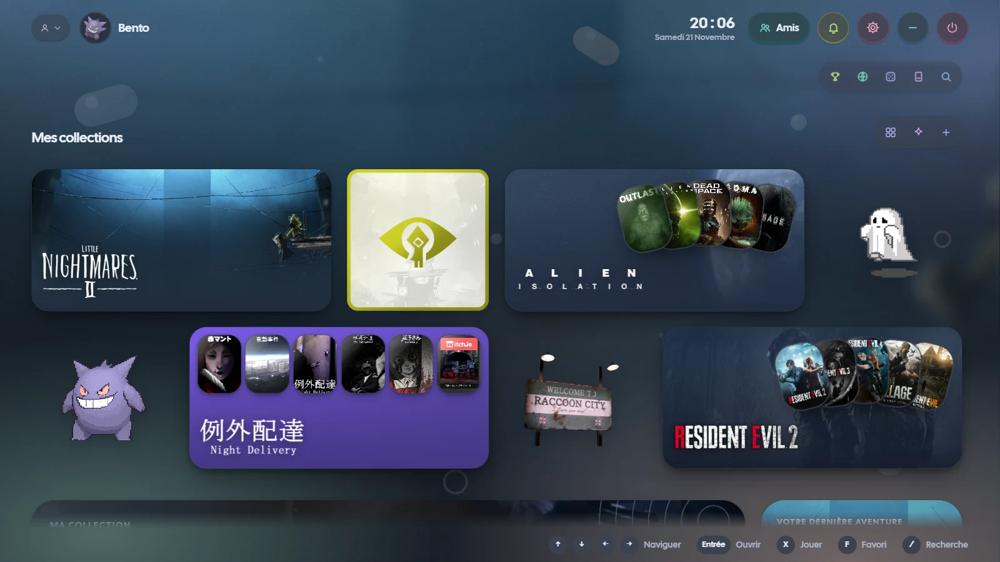
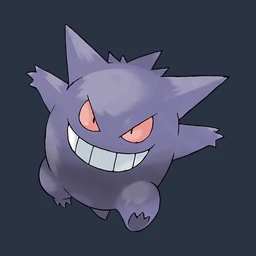
Thrill seeker: survival horror, little frights and cursed tapes, lights off.

Hooked on one more run: roguelikes, card games and bright-coloured indies.
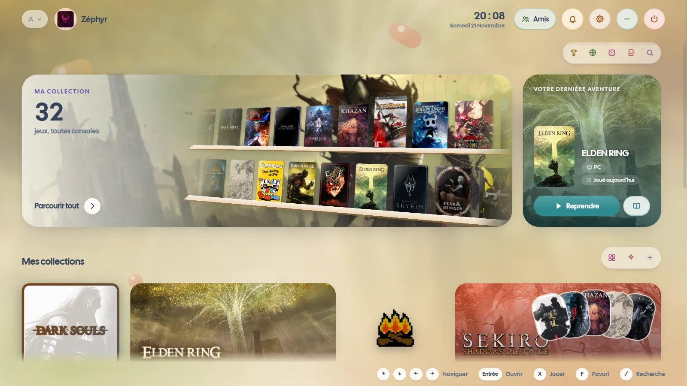
Stubborn knight: bonfires, pixel-perfect parries and bosses retried a hundred times.
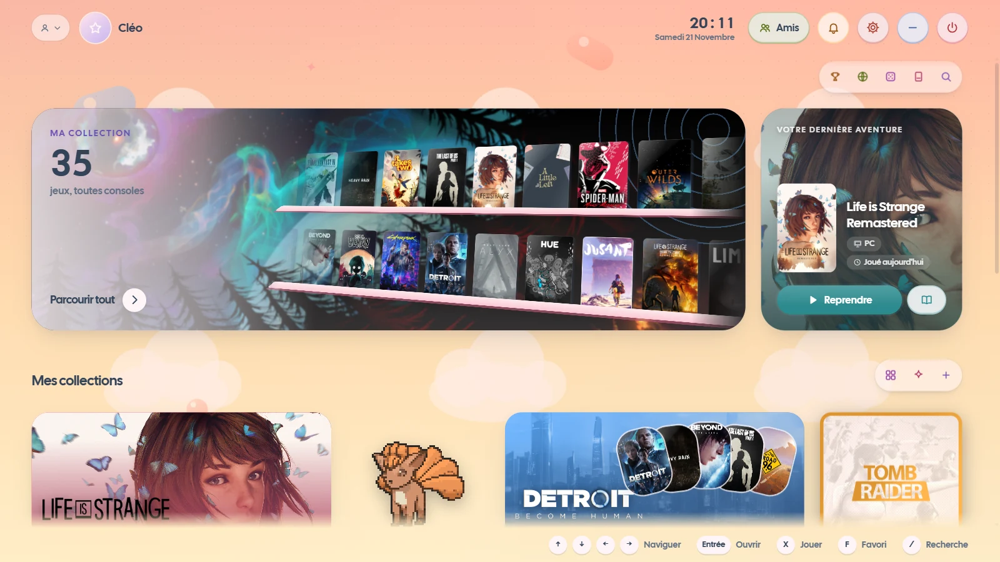
Story lover: narrative games, heartbreaking choices and blockbusters at sunset.
Example home screens: real captures of the app (in French), with real games, composed for this page. The player names are made up.
They recolour the whole of iBox, buttons and backdrop included. Pick one: this page takes it too.

From the Atari 2600 to the Switch 2, plus all your PC games.

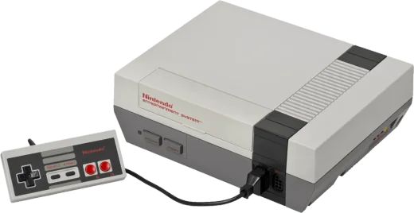


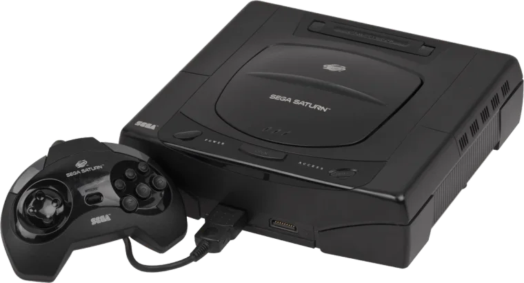


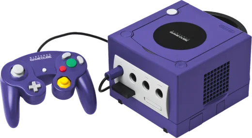


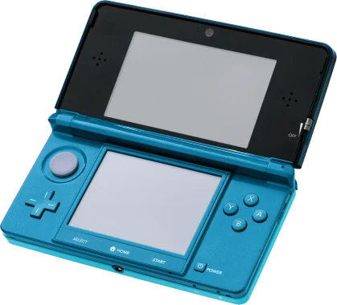
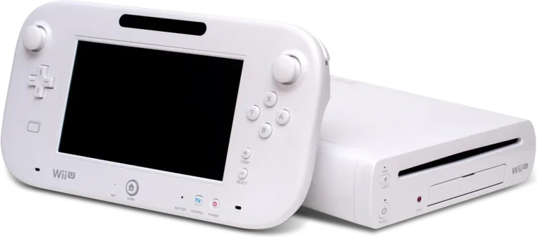


The same library in your hands: a Linux version built for Game Mode, played with the controller, full screen.

In Desktop Mode, download the .AppImage file and keep it in a folder, for example Applications.
Right-click › Properties › Permissions: tick Is executable, then open iBox.
Quit Steam, then Settings › System › Add iBox to Steam. In Game Mode, iBox is waiting in your library.
Still Windows only: hosting a Remote Play game, the in-game overlay and stores without a Linux version (EA, Ubisoft, Xbox, Battle.net). The Steam Deck version updates itself, just like on Windows.
No administrator rights needed, in a few seconds. Updates then arrive on their own.
Profile, game folders, emulators, PC stores: the setup assistant explains everything.
Pick a game on the shelf, iBox takes care of the rest.
On first launch, Windows may show “Windows protected your PC”, because iBox is still a young app. Click More info, then Run anyway.
iBox provides no games, BIOS files or keys: use your own legally owned copies. Emulators come from their official sources. iBox is not affiliated with any manufacturer or publisher; the trademarks mentioned and the game artwork visible in the screenshots belong to their owners.